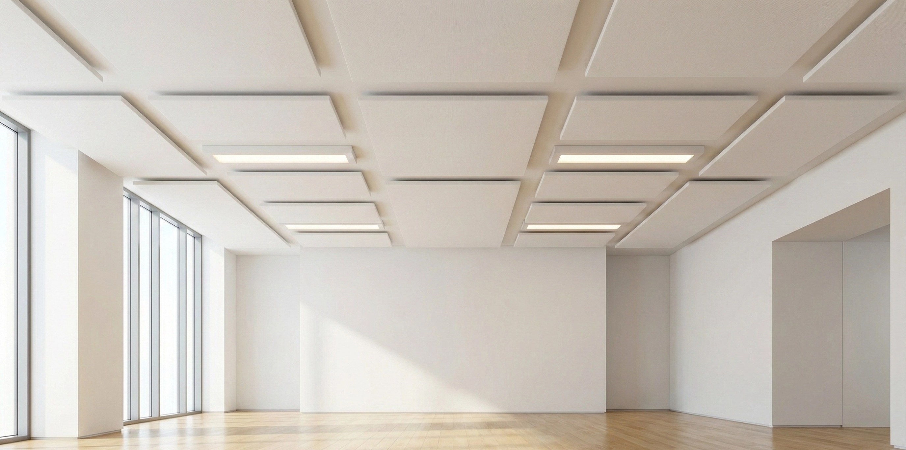

In hallenden Gruppen- und Klassenräumen wird es laut, weil alle lauter werden. Weniger Hall heißt weniger Lärm — für Kinder und Pädagog:innen. Wir messen, planen und montieren die Akustik, abgestimmt mit Träger, Gemeinde und Leitung.
Spielen, Singen, Essen im selben Raum. Absorber an Decke und Wänden nehmen dem Raum den Hall — robust, reinigbar und kindersicher montiert.
Wer die Lehrperson in der letzten Reihe nicht versteht, hört weg. Die Nachhallzeit nach ÖNORM B 8115-3 sagt, ob ein Raum für Unterricht taugt.
Große, harte Räume sind die lautesten. Hier zählen ballwurfsichere Elemente und eine Planung, die zur Nutzung passt.

Referenz Wieselthaler
Aufenthalts- und Schulungsräume: Nachhallzeit um 60 % gesenkt.
Nachhallzeit in jedem Raum, verglichen mit den Zielwerten der ÖNORM B 8115-3 für die Nutzung.
Wie viel Fläche, welches Material, wo genau — vorab berechnet, mit Farben und Formen, die zum Haus passen. Als Grundlage für Gemeinderat oder Ausschreibung, wenn nötig.
Wir montieren außerhalb der Betriebszeiten oder in den Ferien. Ein Ansprechpartner von der Messung bis zur Übergabe.
Die Nachmessung zeigt Träger und Gemeinde, was die Investition gebracht hat.
Wir wählen Materialien nach Brandschutz, Reinigbarkeit und Robustheit aus und montieren so, dass nichts lose ist oder abgerissen werden kann.
Sie bekommen ein Angebot mit Messung, Planung und Umsetzung getrennt ausgewiesen. Auf Wunsch liefern wir die Unterlagen für Beschluss oder Ausschreibung.
Nein. Gemessen wird in einer ruhigen Stunde, montiert am Wochenende oder in den Ferien.
Nennen Sie uns die Räume, gern mit Plan und Fotos. Sie bekommen eine Einschätzung und ein Angebot.